Чтобы работать с плиткой, надо создать ее заново, в меню Плитки -> Новая или кнопкой

Либо открыть существующую через меню Плитки -> Открыть или кнопку на панели инструментов.

После этого разблокируются пункты меню и кнопки на панели инструментов.
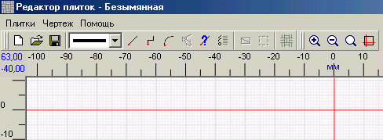
Плитка рисуется на чертеже при помощи инструментов Отрезок
Черчение и редактирование графических элементов намеренно вынесено в отдельную главу - те же приемы и методы используются и для черчения участка. Основные моменты будут здесь упоминаться для наглядности.
В редакторе плиток можно рисовать двумя типами линий - сплошной или точечной. Это выбирается из раскрывающего списка на панели инструментов:

|
Важно! Внешний контур плитки должен быть нарисован сплошной линией. Точечная линия предназначена для рисования декоративных узоров на плитке. Визуально эти типы линий не очень отличаются.
|
Независимо от того, с чего вы начали рисовать плитку - с контура сплошной линией или сначала декоративный узор точечной линией (что, согласитесь, маловероятно) - первая поставленная на чертеже точка становится базовой. Вокруг нее будет осуществляться поворот при ориентации, отличной от нуля; она будет браться по умолчанию для расположения в узоре. Практическое предназначение этой точки вы поймете, когда начнете выполнять соответствующие действия. Пока просто запомните тот факт, что первая поставленная точка становится базовой. Она отмечается на чертеже фиолетовым крестиком.
Размеры на чертеже плитки указаны всегда в миллиметрах. Это позволяет достичь приемлемой точности при рисовании сложных плиток, особенно содержащих дуги. Если плитка большая, она может не умещаться на экране. Можно уменьшить масштаб кнопкой
|
Совет. В главе Черчение графических объектов описан способ рисования в крупном масштабе с Мини-дисплеем.
|
Если плитка не умещается на чертеже, его размеры можно изменить.
По мере того, как создается контур плитки программа вычисляет площадь плитки и рассчитывает количество плиток на квадратный метр. Эта информация показывается на панели инструментов.
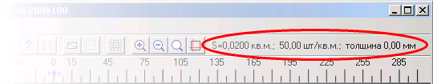
Если у вас возникли подозрения, что цифры не пересчитались после добавления в контур нового элемента, нажмите левой кнопкой мыши непосредственно на надпись. При этом цифры принудительно пересчитываются.
Вместе с площадью и количеством плиток на квадратный метр также показывается толщина плитки. По умолчанию она равна нулю. Толщину можно ввести через меню Чертеж :
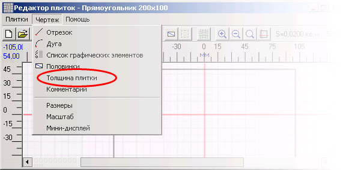
В этом же меню можно ввести комментарий к плитке. Это произвольный текст, который вы наберете. Обычно используется для дополнительных сведений, примечаний, рабочих заметок.
В конце работы надо сохранить плитку через меню Плитки -> Сохранить или кнопку

Новая плитка, по умолчанию называется "Безымянная":
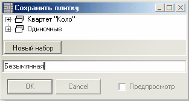
Просто нажав ОК, Вы сохраните ее под этим именем в общем списке плиток:
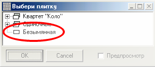
Введите имя плитки:
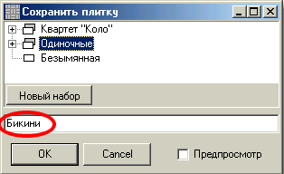
Введя имя плитки, можно указать набор, в котором ее следует сохранить. Плитка сохранится в составе этого набора, а не в общем списке:
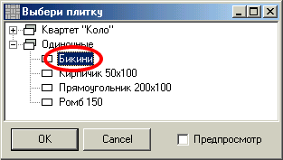
Некоторые плитки поставляются в комплекте (наборе). Как правило, сложить узор из одной плитки этого набора невозможно. Они укладываются вместе, образуя узор из двух и более видов плитки. Имеет смысл сохранять их как отдельный набор. Даже одиночные плитки (узор образует один тип плитки) могут быть разделены на группы по каким-либо признакам (цветные, гладкие и т. д.). Кнопкой Новый набор можно создать набор. В открывшемся окне присвойте ему имя:
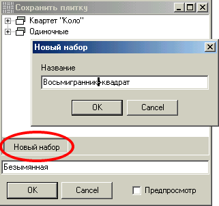
Дайте плитке имя и сохраните ее в составе созданного набора:
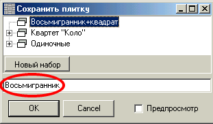
Другим плиткам из этого же набора не забудьте указать место, где их следует сохранять.
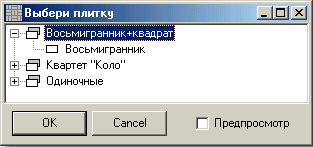
Совет: если плитка ошибочно попала в общий список или не тот набор, откройте ее и сохраните заново через меню Плитки а Сохранить как… Убедившись, что на этот раз все правильно, закройте пересохраненную плитку, откройте плитку сохраненную ошибочно и удалите именно ее.
Примечание: В разных наборах плитки могут иметь одинаковые имена.
При сохранении плитки вместе с ней сохраняются параметры чертежа и масштаб. Когда в следующий раз плитка будет открыта (см. ниже) для редактирования или просмотра, она будет находиться в том же положении, что и была на момент своего сохранения или закрытия редактора.
Открыть существующую плитку для редактирования можно в меню Плитки -> Открыть или кнопкой на панели инструментов. Выбираем из списка плиток нужную и жмем ОК:
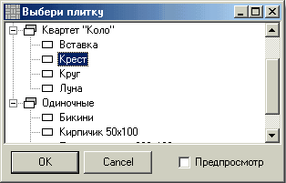
Поставив флажок "Предпросмотр", в этом же окне можно предварительно посмотреть на выбранную в библиотеке плитку:

Выбрав плитку, нажимаете "ОК" и она будет открыта в редакторе плиток. Теперь ее можно изменить, сохранить (еще раз) под другим именем, сменить название, удалить.
Важно помнить, что при удалении плитки удаляются все ее узоры и половинки. Если Вы уверены, что открытая плитка не нужна, удалите ее в меню Плитки:
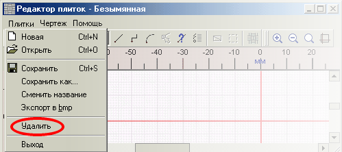
С узорами вы могли ознакоимться в разделе "Быстрый старт", а половинки будут рассмотрены ниже. Из этого же меню имеется возможность экспортировать плитку в точечный рисунок формата BMP. Пункт Экспорт в bmp расположен выше пункта Удалить. Введите имя рисунка в окне "Сохранить как". Контур плитки будет вписан в рисунок 64x64 точки и сохранен на диск.
Если в комплекте форм для плитки есть половинки, их нужно нарисовать тут же. Этому посвящена следующая глава, Половинки.
После создания плитки нужно составить хотя бы один узор с ее использованием. Редактор узоров вызывается через главное меню главного окна. Можно воспользоваться кнопкой